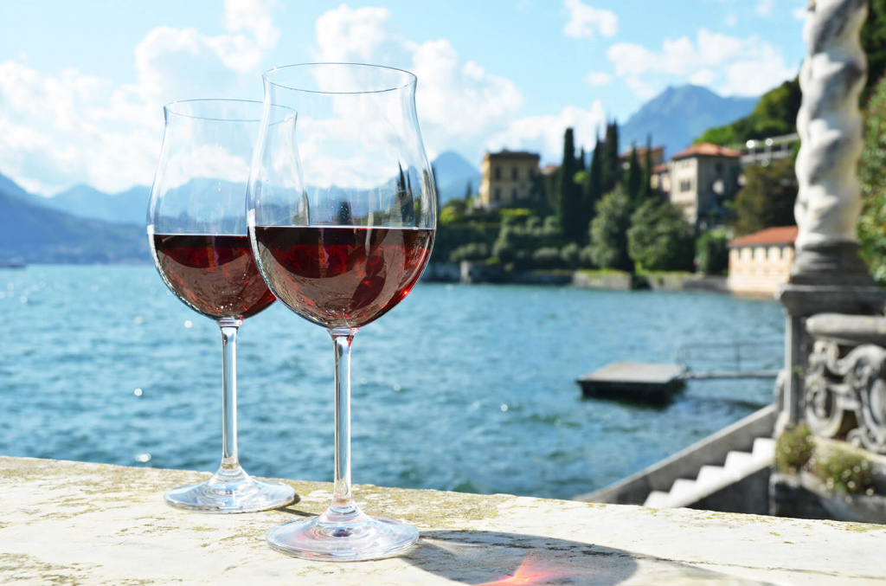
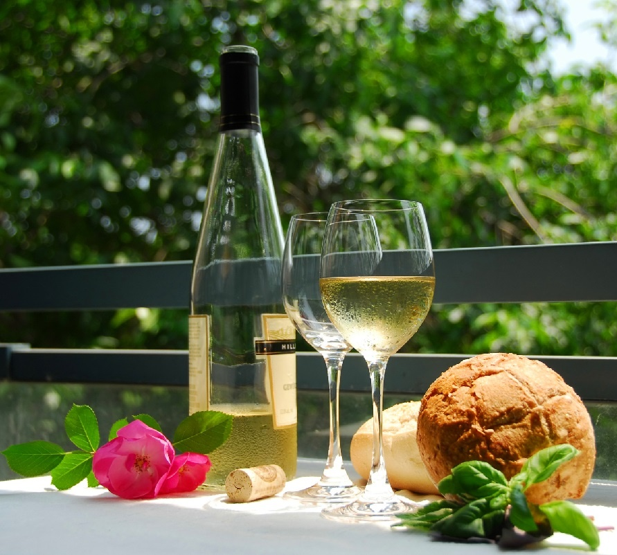

По мнению некоторых экспертов настоящее вино можно приготовить только из винограда, а напитки из ягод, фруктовых соков или растений вином не являются. Далее целесообразно выделить виды вин по цвету. В зависимости от времени ферментации (брожения) и сорта винограда они бывают: красные, белые и розовые. Красные – в технологии производства используются предварительно раздавленные ягоды винограда красных сортов. При длительной выдержке эти вина постепенно теряют темную окраску. К красным винам относятся такие знаменитые марки как «Бордо» (классическое вино Западной Франции, подающееся к жаркому), «Каберне Совиньон» (имеет густой сложный аромат, хорошо подходит к курице и макаронам), «Кьянти» (известное итальянское ароматное вино, идеально сочетающееся со стейками и бургерами), «Божоле» (сорт молодого легкого вина), «Мерло» (ароматный и густой напиток к простой пище) и «Пино Нуар» (густое терпкое вино, подающееся к любым блюдам).
Белые – в большинстве случаев делаются из сока белых сортов винограда. Если используется красные сорта винограда, тогда из ягод предварительно снимают кожицу, содержащую красящие вещества. К белым винам относят «Совиньон Блан» (имеет травяной аромат и подается с рыбой), «Шардонне» (настаивается в дубовых бочках, прекрасно подходит к легкой пище), «Шенон Блан» (отличается пряным сладким вкусом, его подают к овощам и курице), «Gewuztraminer» (бодрящий напиток, подаваемый к острым блюдам и рыбе), «Рислинг» (его вкус напоминает мед, сочетается с восточными блюдами и телятиной), и Сотерн (сладкое густое десертное вино). Розовые – для получения розового цвета кожицу винограда удаляют сразу после начала процесса ферментации. Эти вина делаются из смеси красных и белых сортов винограда, при этом используется технология приготовления белых вин.Классификация вин по содержанию сахара и спирта подразумевает их деление на столовые, креплённые и игристые. Столовые вина бывают сухими (сахар до 0,3%, спирт — 9-14%), полусухими (сахар — 0,5-3%, спирт — 9-12%) и полусладкими (сахар — 3-8%, спирт — 9-12%,).Креплёные вина делятся на следующие виды: крепкие (сахар — 1-14%, спирт — 17-20%), десертные полусладкие (сахар — 5-12%, спирт — 14-16%), сладкие (сахар — 14-20%, спирт — 15-17%), ликерные (сахар — 21-35%, спирт — 12-17%), ароматизированные (сахар — 6-16%, спирт — 16-18%). К крепленым винам относятся такие разновидности как «Мадера», «Херес» и «Портвейн». Игристые вина — могут иметь разное содержание сахара и спирта, в процессе вторичного брожения их дополнительно насыщают углекислым газом. Самым известным игристым вином в мире является шампанское.